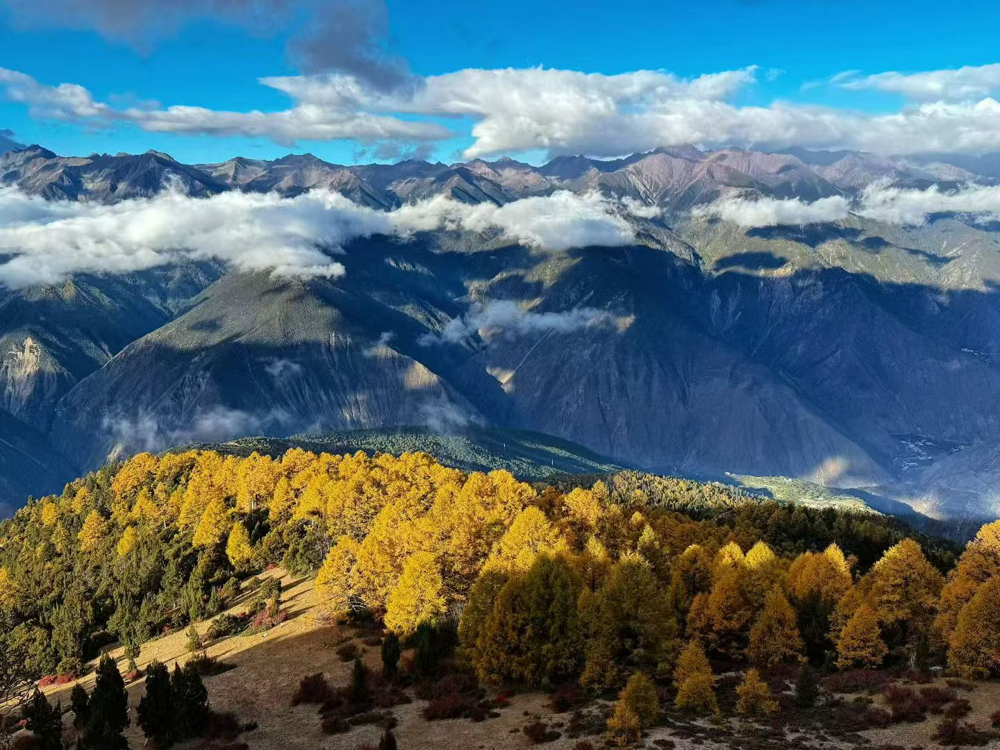
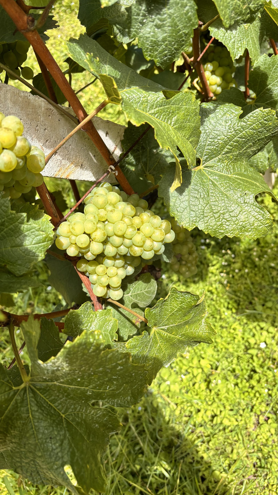
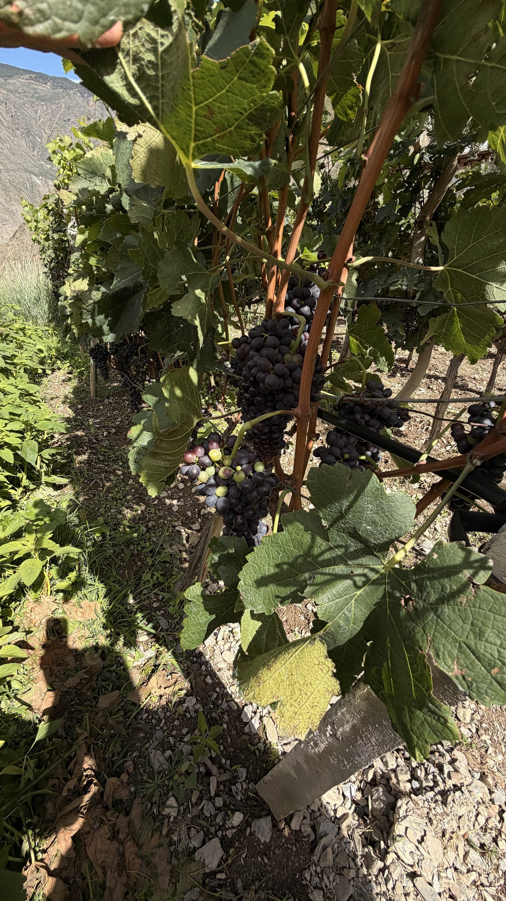
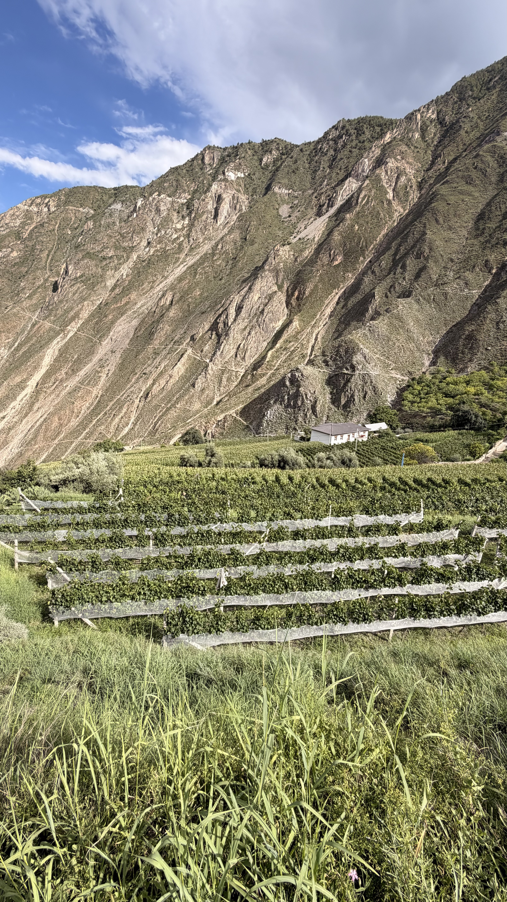
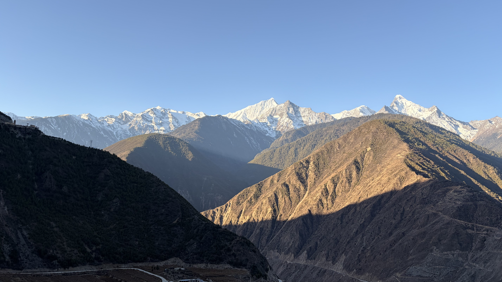
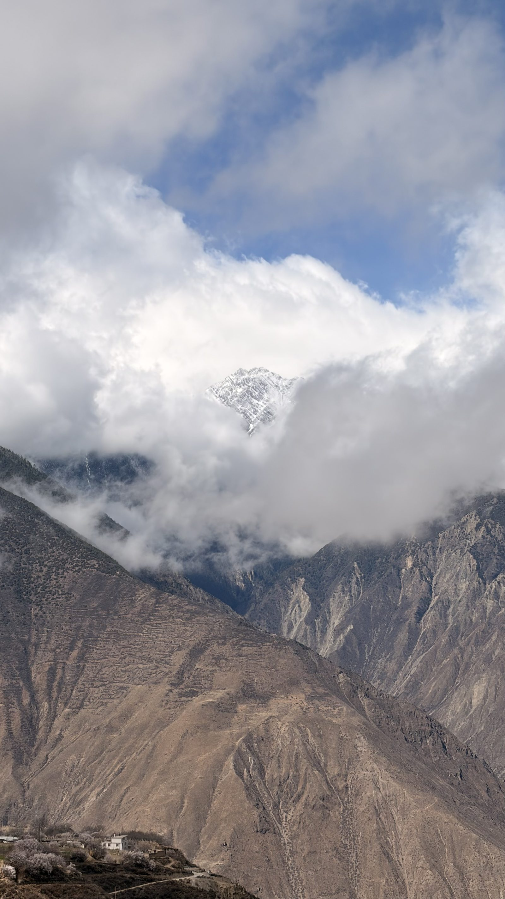
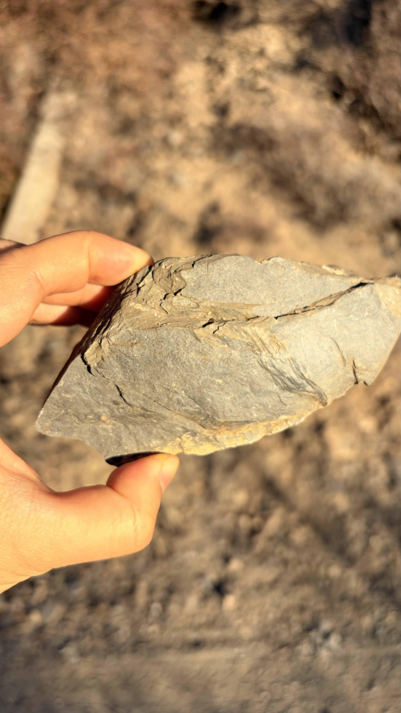
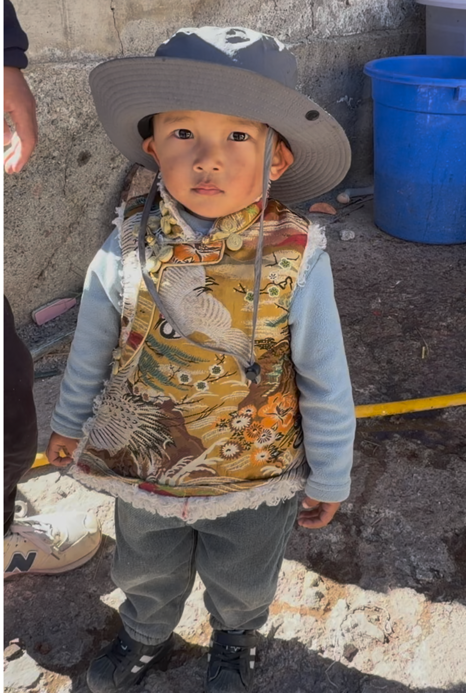
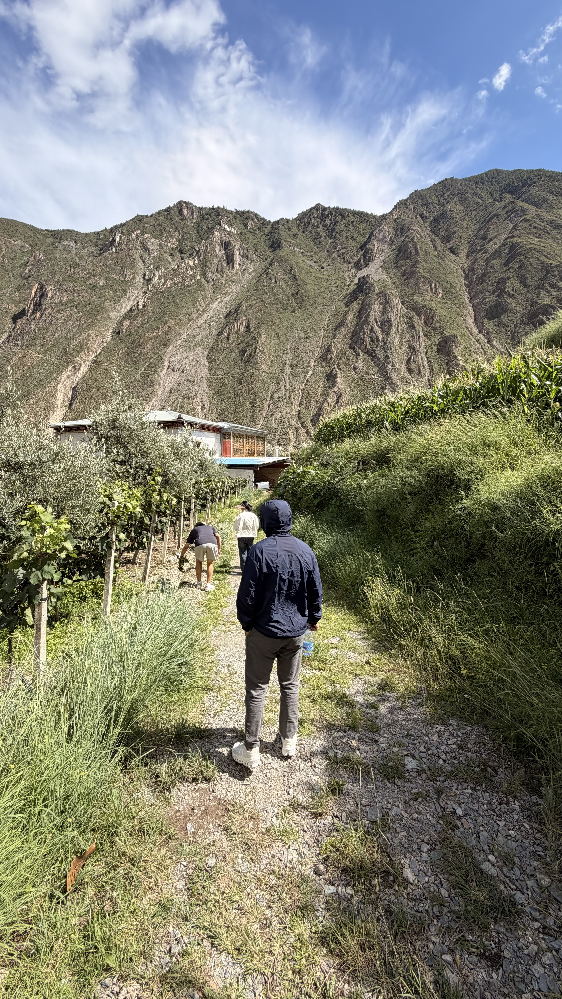
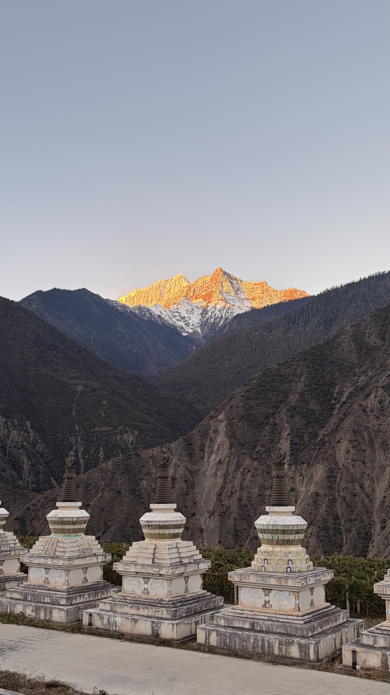

秘境之酿A Vineyard at the Edge of Sky
在横断山脉深处、三江并流的腹地，北纬二十八度的雪域高原上，朗境酒庄悄然生根。这里是被梅里雪山与白马雪山环抱的藏地秘境，山地绵延，森林覆盖，天地辽阔。朗境酒庄在这片被时间厚爱的土地上，开启属于自己的篇章。
秘境之酿A Vineyard at the Edge of Sky

产区的葡萄酒历史可追溯至百年前——法国传教士在茨中村种下第一株葡萄，老藤至今仍在生长。百年后的今天，朗境酒庄在这片被时间厚爱的土地上，开启属于自己的篇章。
我们与时间对话。We do not race with time. We listen to it.
风土Terroir · The Gift of the Plateau
i.海拔 · 垂直的奇迹
朗境酒庄扎根于德钦梅里产区，葡萄园分布在海拔两千米以上的垂直带上。这里是中国少数不需要冬季埋土防寒的产区。高海拔带来凉爽的气温、显著的昼夜温差，以及强度极高的紫外线——让葡萄在含糖量攀升之前，便能实现酚类物质的充分成熟，同时保有清冽的酸度。

ii.气候 · 寒温带的高原韵律
产区属低纬度高海拔寒温带季风性气候，日照充足，降水适中。南亚季风与喜马拉雅冷风在此交汇，不同山谷间的降水差异悬殊，糖分积累与酸度表现各具个性。适度的水分胁迫让果粒更小、皮果比更高，风味因此更加凝聚。

产区内不同地块因其海拔、朝向、坡度的差异，被精准匹配到最适宜的品种——高处的霞多丽与黑皮诺，中段的黑皮诺，低处的梅洛与赤霞珠，各得其所。

藏地人文People & Faith, at the Foot of Snow
德钦县居民以藏族为主，少数民族占比极高。战国时期古羌人最先抵达这片土地，唐代吐蕃部族从西藏迁入，与古羌人融合，形成了今天的藏族居民。先民们依据光照、水源、地质灾害风险与交通条件，世代试错，最终形成了今天错落有致的村落分布。


产区农业人口人均耕地极少，朗境与当地农户建立了紧密的合作模式——企业提供技术与管理，农户负责日常栽培、手工采收与手工分选。由于地块坡度极陡、道路狭窄，几乎无法使用机械，全流程依赖手工；手工分选会淘汰相当比例的不合格果粒。农户养殖牦牛需要草料，因此主动定期人工除草，形成了一种朴素而可持续的双赢方式。

品质追求Small, Precise, and Patient
i.严控产量，质量优先
朗境酒庄的年产量严格控制在极低的水平，单产维持在精品小农庄的标准。这个数字意味着每一瓶酒都承载着对品质的极致执着——不做规模，只做精品。

ii.海拔分区的品种布局
酒庄按照海拔精细布局品种：中低海拔种植赤霞珠，更高处种植西拉，最高处种植黑皮诺与霞多丽。同时，规划了一块纯黑皮诺单一园，对标勃艮第顶级名庄理念，定位高端稀缺酒款。

iii.向世界顶级标准看齐
在种植策略上，朗境对标勃艮第顶级名庄经验，尝试大幅提升种植密度，通过增加根系竞争来提升果实品质。首个年份将采用收购葡萄与租赁葡萄园的方式酿造，已锁定适龄霞多丽和树龄更长的老藤霞多丽等优质原料。
酒庄同时探索生物动力法种植的可能性，寻求更自然、更可持续的耕作方式，让每一株葡萄都能真实地表达脚下这片土地。
让世界品尝雪山
朗境酒庄坐落于梅里雪山脚下，与这片藏地秘境共同呼吸。这里的每一粒葡萄，都经历了高海拔的凛冽、紫外线的淬炼、昼夜温差的雕琢，和藏地阳光的温柔照拂。
朗境相信，最伟大的葡萄酒，从来不是人力所能创造的——而是风土借酿酒师之手，向世界交出的一份答卷。
